The old measure does not survive
Frey & Osborne’s 2013 computerisation scores correlate with LLM exposure at r = 0.006 across the 150 occupations carrying both. Not weak agreement — none.
O*NET · 287 STEM occupations · 5,717 tasks · 963 subtasks
A scraped, scored and externally validated dataset of STEM work. Every task rated through the standardised activity beneath it, weighted by BLS employment, and checked against independent human expert ratings at r = 0.85.
Each comes from a different data source, and they point the same way.
Frey & Osborne’s 2013 computerisation scores correlate with LLM exposure at r = 0.006 across the 150 occupations carrying both. Not weak agreement — none.
Pay barely correlates with exposure (r = 0.033) but does with accountability (r = 0.401). Only 9% of STEM workers are in work a model could do but is not permitted to.
161 of 268 occupations have no close, meaningfully safer neighbour in the activity network. Moving to an adjacent role fails where it is most needed.
Across eleven years of archived releases, task turnover is 8.1% among occupations O*NET actually re-surveyed — and roughly three times faster in the exposed ones than the protected ones.
The story walks through the argument in twelve chapters with two interactives. The dashboard lets you interrogate the same tables directly. The security matrix asks a different question of the same data: not whether a handoff will happen, but whether it could be undone.
The story
Scroll-driven, twelve chapters. The inversion against Frey & Osborne, what a job is made of, the handoff frontier, who actually does the work, and whether any of it has moved yet. Includes an explorer for any occupation and a side-by-side comparison of any two.
Read →The dashboard
Every occupation, task and subtask, rankable by six different measures. Network projections, the employment join, the validation panel, and a PNG export on every chart.
Explore →The security matrix
Every occupation on three axes at once: what AI deployment buys, what it costs to remove the human, and how hard the capability would be to rebuild. Rotatable in 3D with axis-aligned face views for reading values, a scenario selector, and eight named cells from “clear win” to “strategic trap”.
Open →Every source with its version and access date, every decision that shapes a number, and the ten things this dataset cannot tell you.
Methodology
Sampling frame, extraction, the scoring rubric and its unit of analysis, the derived measures and why they are not simple means, three layers of validation, and the limitations stated plainly.
Read →On GitHub
The same document as markdown, alongside the pipeline that produced
every figure in it, the 173 tests, and manifest.json with per-file row
counts and content hashes for each run.
Publication-resolution PNGs, rendered from the dashboard itself so they cannot drift from what it shows.
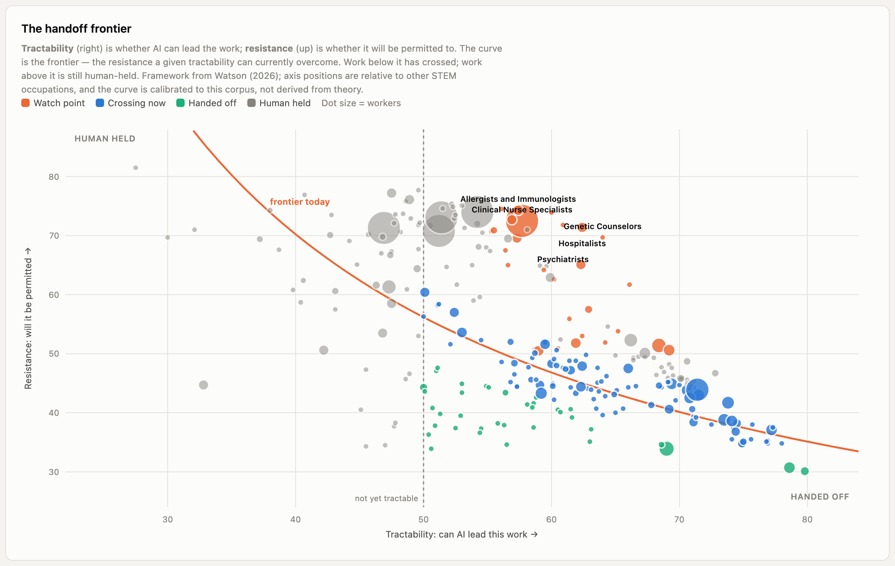
handoff frontier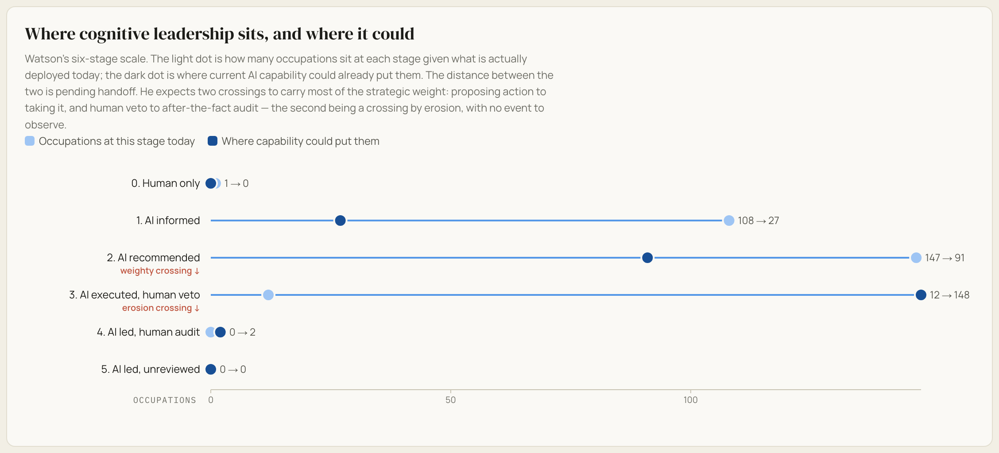
cognitive leadership stages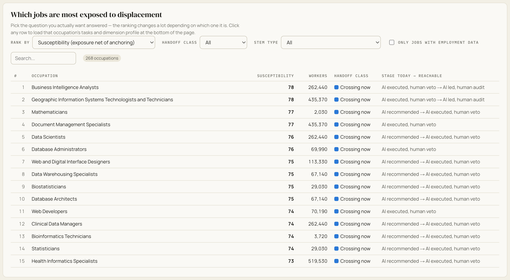
displacement ranking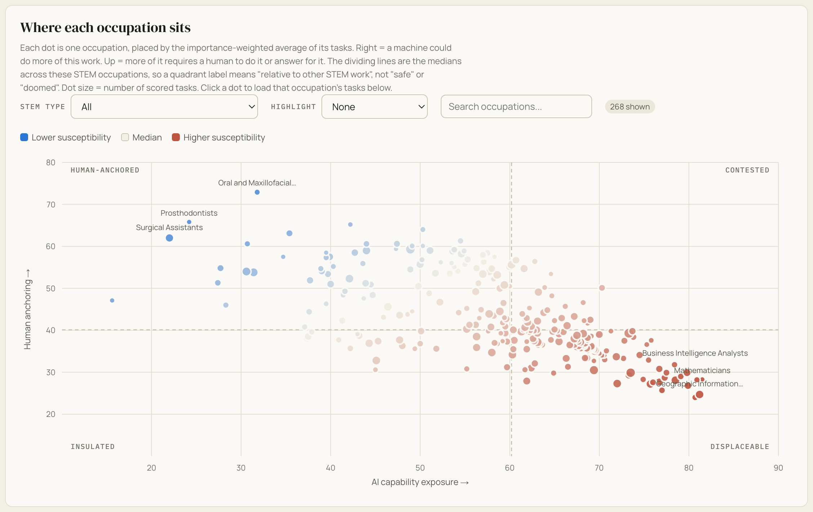
quadrant scatter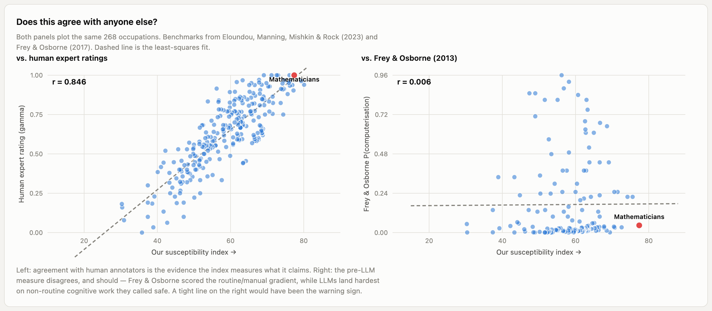
validation benchmarks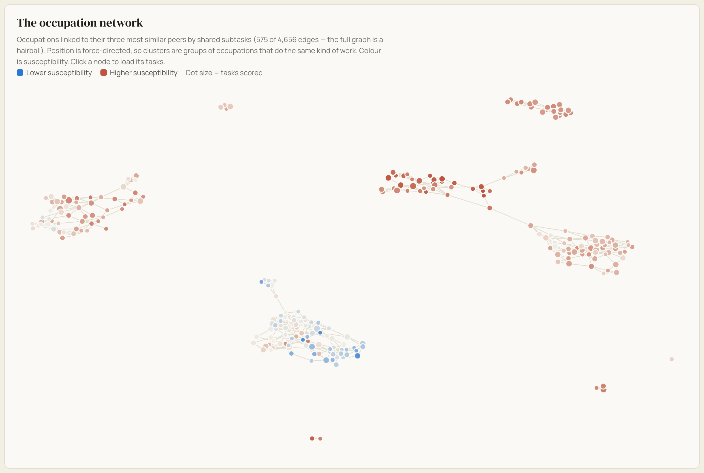
occupation network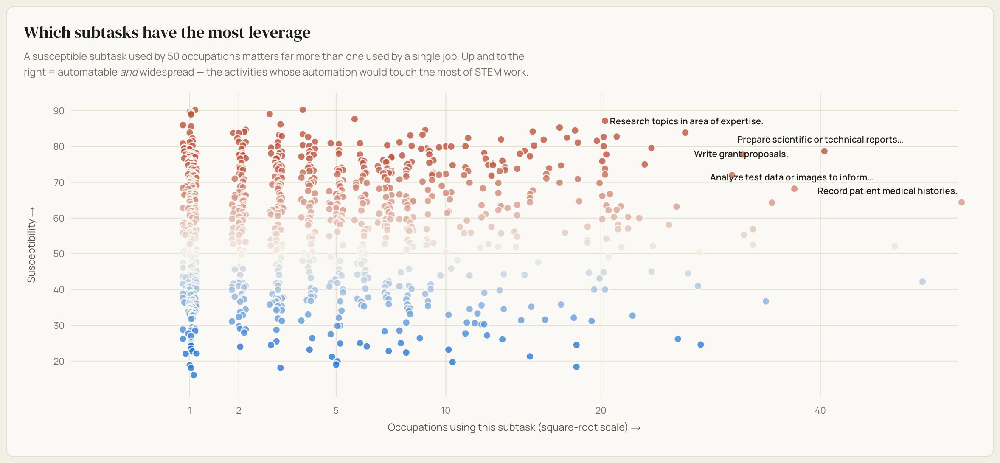
subtask leverage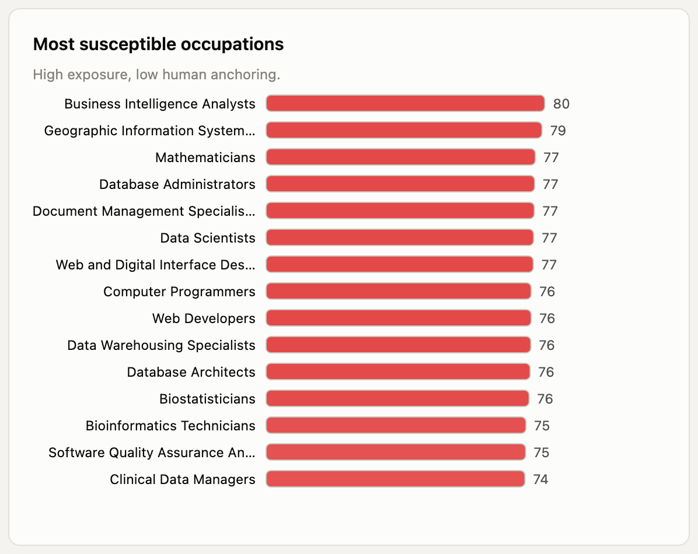
most susceptible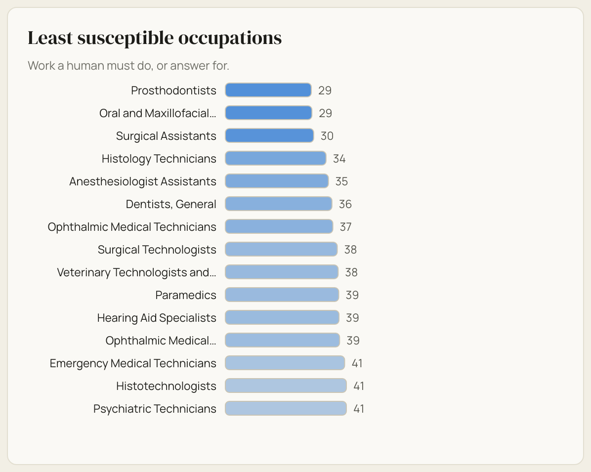
least susceptible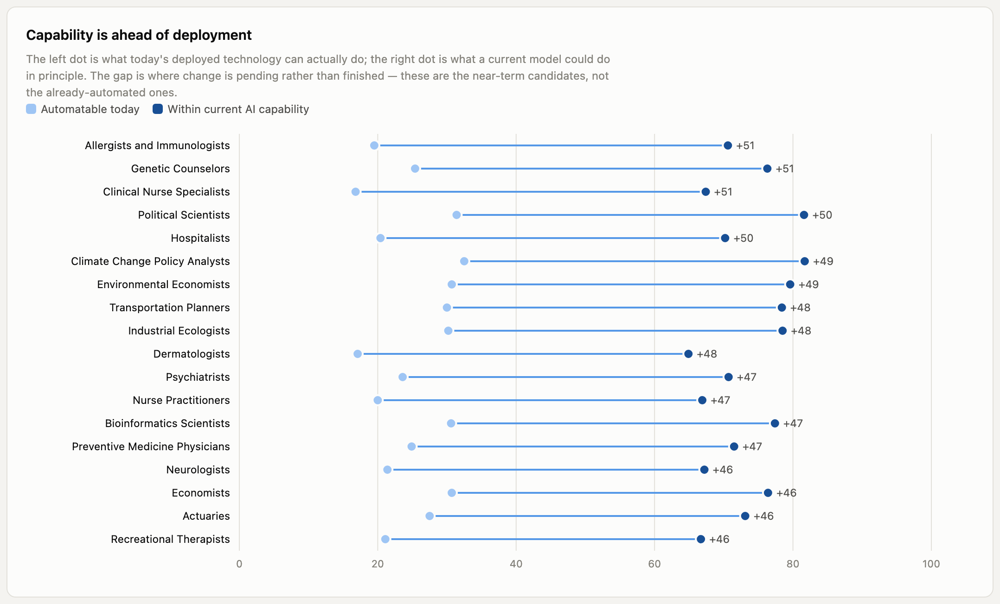
willingness gap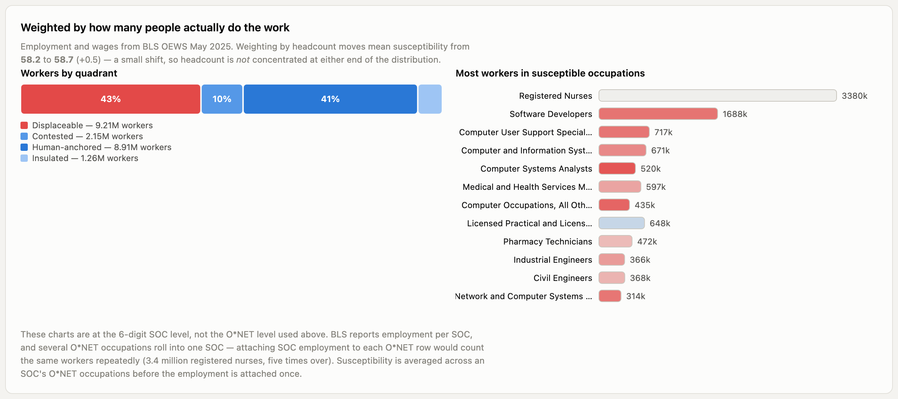
employment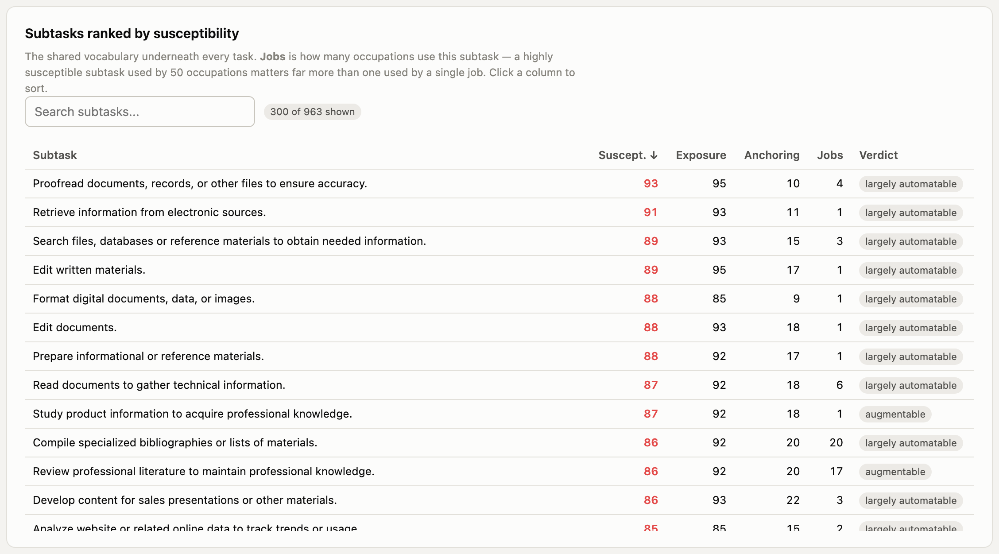
subtask tableResult tables as CSV. The full pipeline, tests and rebuild instructions are in the repository.
{kind=link}
{kind=link}
{kind=link}
{kind=link}
{kind=link}
{kind=link}
{kind=link}
{kind=link}
{kind=link}
{kind=link}
{kind=link}
{kind=link}